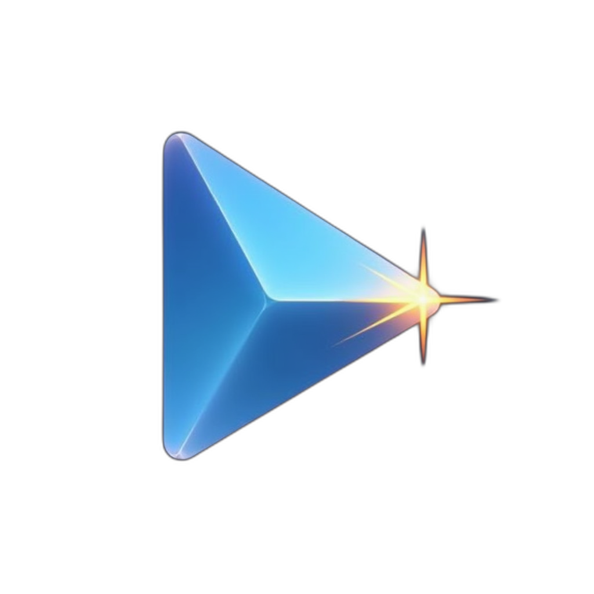
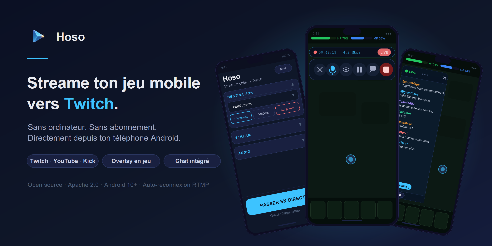
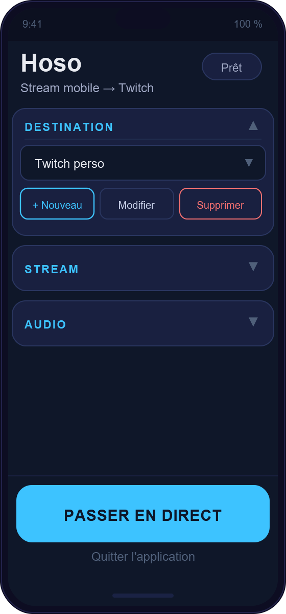
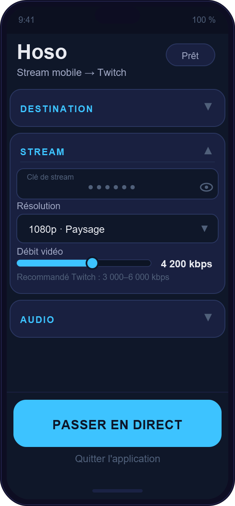
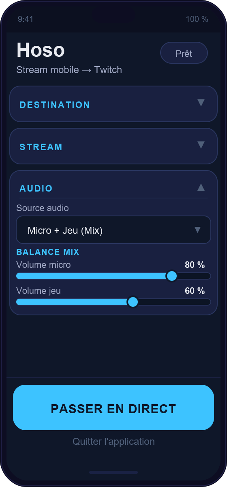
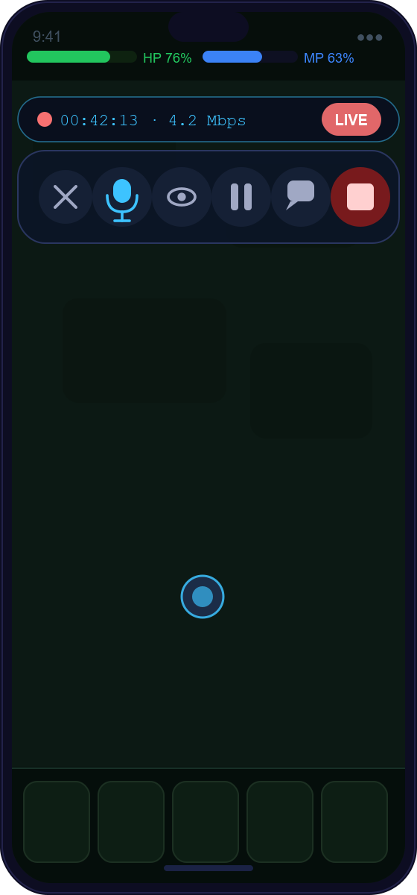
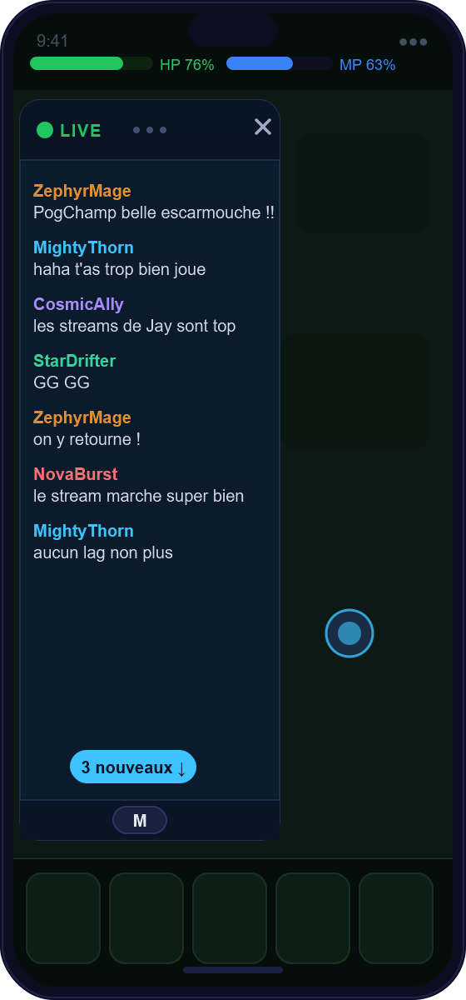

Hoso 放送Sans ordinateur. Sans abonnement.
Directement depuis ton téléphone Android.
Open source · Apache 2.0 · Android 10+ · Auto-reconnexion

Hoso ne demande aucun compte et ne récupère aucune donnée. La fiabilité et la discrétion ne sont pas des options : ce sont la preuve concrète du respect de l'utilisateur.
Diffuser sans friction, sans intrusion. L'outil se fait oublier pour laisser place au jeu et à la personne.
Jay fait des applications qui fonctionnent vraiment et respectent l'humain. Hoso en est une preuve vivante — une référence attire par elle-même.
Préparer l'app pour le Play Store, soigner chaque détail, puis ouvrir la porte au soutien volontaire.
Celui qui joue sur son téléphone et veut diffuser simplement — sans usine à gaz, sans surcoût, sans fatigue.
Joue sur mobile, diffuse sur Twitch, souvent débutant. Veut un stream fiable — écran, son du jeu, voix — en deux gestes.
A besoin de prévisibilité et d'une faible charge mentale. Zéro pop-up surprise, zéro notification agressive.
Dix fonctions livrées et utilisées en vrai, sur des streams réels.
Ton écran de jeu envoyé en direct, en pleine qualité.
Twitch, YouTube, Kick ou serveur personnalisé, par profils.
Micro + son du jeu, volumes réglables en direct.
Un bouton déplaçable pour piloter le stream sans quitter le jeu.
Débit, durée et état visibles d'un coup d'œil.
Masquer l'écran d'un geste quand c'est privé.
Une bulle flottante, anonyme, qui ne bloque pas le jeu.
La coupure réseau se rattrape toute seule.
Déclenche des actions et réagit aux événements du stream.
Profils, volumes et réglages retrouvés à chaque ouverture.

ConfigurationSections repliables
Réglages streamQualité & destination
Mélange audioMicro + jeu
Contrôles liveEn un geste
Chat TwitchFlottant & discretDes ajouts qui élargissent les usages, posés sur des bases saines.
Ton visage par-dessus le jeu (facecam).
Pour les directs « à la première personne », sans jeu.
Vidéo + audio, format discussion.
Micros et casques sans fil pris en charge.
Plusieurs plateformes en même temps.
Emotes, badges, mises en avant des mentions.
Chaque promesse faite à l'utilisateur est tenue par une exigence concrète, vérifiable.
L'audit a repéré une fonction technique mal déclarée qui ferait refuser l'app par Google. Elle est déjà identifiée, comprise, et c'est la toute première chose qu'on corrige. Aucune mauvaise surprise : on l'affiche au lieu de la cacher.
Du blocage à lever jusqu'au soutien volontaire — dans l'ordre, sans précipitation.
La gratuité et le respect ne sont pas négociables. Voici les lignes rouges, posées par écrit.
La version gratuite reste pleinement utilisable.
Zéro friction, zéro extraction de données.
Le rapport de plantage est désactivé par défaut.
L'overlay reste discret, aucune fenêtre forcée.
Le soutien est libre, jamais culpabilisant.
Toujours prévenir, toujours se reconnecter.